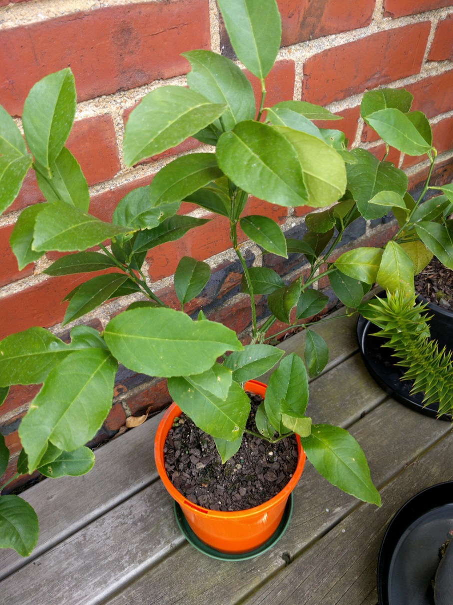

Lenny is a compact, evergreen tree that produces medium sized, thin skinned fruit. His fruit are super juicy with low acidity making for extra delicious homemade lemonade, lemon curd or a mouthwatering lemon meringue pie. Lenny will happily grow in a container or out amongst his other Tastee As family members
Lemons are a great vitamin C food source. Lemon juice also offers up a healthy serving of potassium, magnesium and copper. There is nothing more soothing and healing than a hot honey and lemon drink in winter!
Height up to 5m, Harvest all year round, Self fertile, Full sun
Medium sized to large shrub with dark green foliage. Clusters of frangrant white flowers followed by freely produced yellow fruits. Eventually 2 x 1.5m
